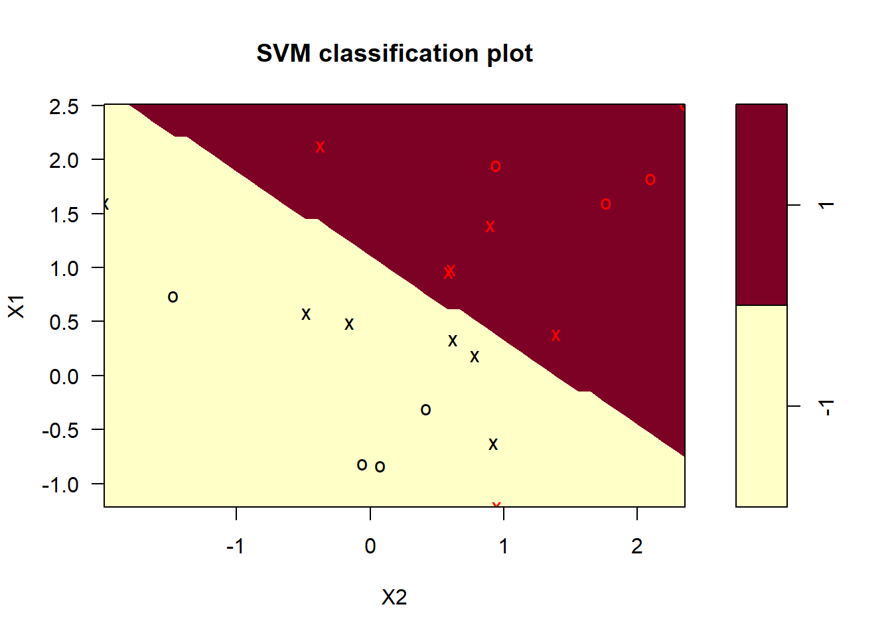
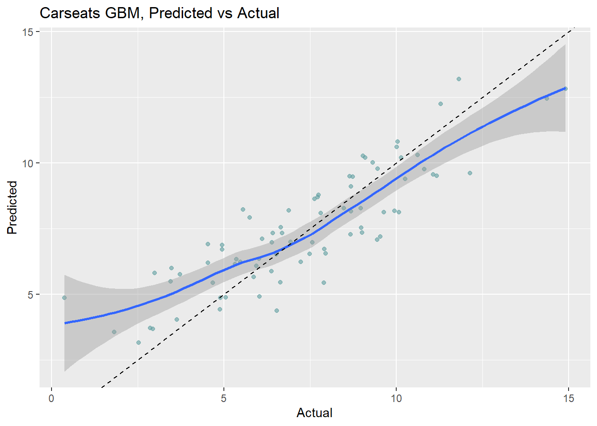
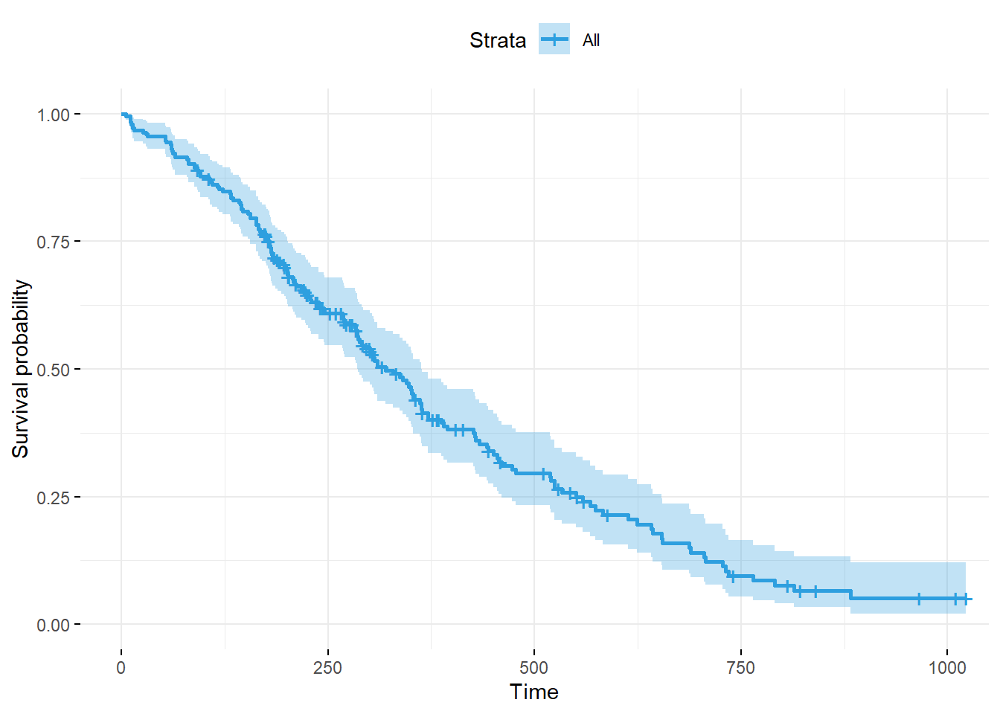
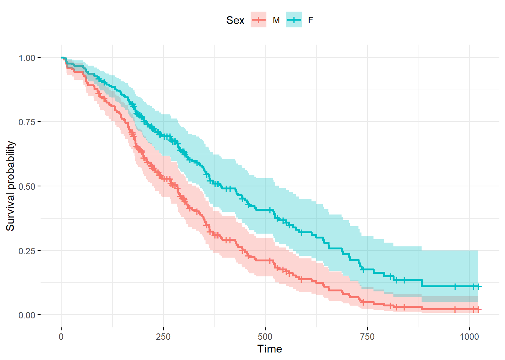

15.2 Survival Curve Estimation
There are parametric and non-parametric methods to estimate a survivor curve.
The Kaplan-Meier estimator for the survival function is
\[\hat{S} = \prod_{i: t_i < t}{\frac{n_i - d_i}{n_i}}\]
where \(n_i\) is the number of persons under observation at time \(i\) and \(d_i\) is the number of individuals dying at time \(i\). The Kaplan-Meier curve falls only when a subject dies, not when a subject is censored. Calculate the Kaplan-Meier estimate with the survfit() function.
Below is a Kaplan-Meier estimate fit one survival curve for all observations. Suppose you throw a party and for an hour monitor how long guests dance. Variable time is the right-censored dancing time, and obs_end indicates if you observed the person stop dancing before you stopped monitoring (1|0).
dancedat <- data.frame(
name = c("Chris", "Martin", "Conny", "Desi", "Reni", "Phil",
"Flo", "Andrea", "Isaac", "Dayra", "Caspar"),
time = c(20, 2, 14, 22, 3, 7, 4, 15, 25, 17, 12),
obs_end = c(1, 1, 0, 1, 1, 1, 1, 1, 0, 0, 0)
)
km <- survfit(Surv(time, obs_end) ~ 1, data = dancedat)
ggsurvplot(
fit = km,
palette = "blue",
linetype = 1,
surv.median.line = "hv",
risk.table = TRUE,
cumevents = TRUE,
cumcensor = TRUE,
tables.height = 0.1
)
km <- survfit(Surv(time, cens) ~ 1, data = GBSG2)
ggsurvplot(km, risk.table = TRUE, surv.median.line = "hv")
Several parametric distributions are available for modeling survival data. The exponential distribution is the easiest to use because it has a constant hazard \(h(t) = \lambda\). The cumulative hazard is \(H(t) = \int_0^t \lambda dt = \lambda t\) and the corresponding survival function is
\[S(t) = e^{-H(t)} = e^{-\lambda t}.\]
The expected survival time is \(E(T) = \int_0^\infty S(t)dt = \int_0^\infty d^{-\lambda t} dt = 1 / \lambda.\). The median survival time is \(S(t) = e^{-\lambda t} = 0.5\), or \(t_{med} = \log(2) / \lambda\).
The Weibull distribution is more appropriate for modeling lifetimes, however. The Weibull hazard function is \(h(t) = \alpha \lambda (\lambda t)^{\alpha - 1} = \alpha \lambda^\alpha t^{\alpha-1}\).
data.frame(t = rep(1:80, 3),
alpha = c(rep(1.5, 80), rep(1, 80), rep(0.75, 80)),
lambda = rep(0.03, 240)) %>%
mutate(
f = dweibull(x = t, shape = alpha, scale = 1 / 0.03),
S = pweibull(q = t, shape = alpha, scale = 1 / 0.03, lower.tail = FALSE),
h = f / S # same as alpha * lambda^alpha * t^(alpha-1)
) %>%
ggplot(aes(x = t, y = h, color = as.factor(alpha))) +
geom_line() +
theme(legend.position = "top") +
labs(y = "hazard", x = "time", color = "alpha",
title = "Weibul hazard function at varying levels of alpha",
subtitle = "Lambda = 0.03",
caption = "alpha = 1 is special case of exponential function.")
The cumulative hazard function is \(H(t) = (\lambda t)^\alpha\) and the corresponding survival function is
\[S(t) = e^{-(\lambda t)^\alpha}.\]
The exponential distribution is a special case of the Weibull where \(\alpha = 1\). The expected survival time is \(E(t) = \frac{\Gamma (1 + 1 / \alpha)}{\lambda}\). The median survival time is \(t_{med} = \frac{[\log(2)]^{1 / \alpha}}{\lambda}\)
The Kaplan-Meier estimate is used mainly as a descriptive tool. The Weibull model produces a smooth survival curve instead of a step function. The Weibull model assumes a Weibull distribution.
Fit a Weibull model with the survreg() function.
wb <- survreg(Surv(time, cens) ~ 1, data = GBSG2)
# 90% of patients survive beyond time point 385
# Alternatively, 10% of patients die at time 385
predict(wb, type = "quantile", p = 1 - 0.9, newdata = data.frame(1))## 1
## 385# The median survival time is 1694
predict(wb, type = "quantile", p = 1 - 0.5, newdata = data.frame(1))## 1
## 1694surv <- seq(.99, .01, by = -.01)
t <- predict(wb, type = "quantile", p = 1 - surv, newdata = data.frame(1))
head(data.frame(time = t, surv = surv))## time surv
## 1 61 0.99
## 2 105 0.98
## 3 145 0.97
## 4 183 0.96
## 5 219 0.95
## 6 253 0.94surv_wb <- data.frame(time = t, surv = surv,
upper = NA, lower = NA, std.err = NA)
ggsurvplot_df(fit = surv_wb, surv.geom = geom_line)
Fit a Weibull model controlling for hormonal therapy horTh and tumor size tsize.
## (Intercept) horThyes tsize
## 7.961 0.312 -0.012##
## Call:
## survreg(formula = Surv(time, cens) ~ horTh + tsize, data = GBSG2)
## Value Std. Error z p
## (Intercept) 7.96070 0.10413 76.45 < 0.0000000000000002
## horThyes 0.31176 0.09602 3.25 0.0012
## tsize -0.01218 0.00272 -4.47 0.000007772
## Log(scale) -0.26494 0.04952 -5.35 0.000000088
##
## Scale= 0.767
##
## Weibull distribution
## Loglik(model)= -2623 Loglik(intercept only)= -2637
## Chisq= 28 on 2 degrees of freedom, p= 0.00000076
## Number of Newton-Raphson Iterations: 5
## n= 686surv <- seq(.99, .01, by = -.01)
newdata <- expand.grid(
horTh = levels(GBSG2$horTh),
tsize = quantile(GBSG2$tsize, probs = c(0.25, 0.50, 0.75))
)
t <- predict(wbmod, type = "quantile", p = 1 - surv, newdata = newdata)
surv_wbmod <- surv_wbmod_wide <- cbind(newdata, t) %>%
pivot_longer(names_to = "surv_id", values_to = "time", cols = -c(1:2)) %>%
mutate(tsize = as.numeric(tsize),
surv_id = as.factor(as.numeric(surv_id))) %>%
data.frame()
surv_wbmod$surv = surv[as.numeric(surv_wbmod$surv_id)]
surv_wbmod$upper = NA
surv_wbmod$lower = NA
surv_wbmod$std.err = NA
surv_wbmod$strata = NA
surv_wbmod[, c("upper", "lower", "std.err", "strata")] <- NA
ggsurvplot_df(surv_wbmod, surv.geom = geom_line,
linetype = "horTh", color = "tsize", legend.title = NULL)
Interpret the coefficient as the probability of surviving falls by 0.012 per unit increase in the tumor size and increases by 0.312 if taking hormonal therapy.
You can fit other models with the dist = c("lognormal", "exponential") parameter.
The Cox model (aka, proportional hazards model) is the most widely used model for survival analysis. Whereas the Weibull model is fully parametric, the Cox model is semi-parameteric. Fit a Cox proportional hazards model with coxph(). Negative values indicate a longer survival period.
## horThyes tsize
## -0.374 0.015newdata <- expand.grid(
horTh = levels(GBSG2$horTh),
tsize = quantile(GBSG2$tsize, probs = c(0.25, 0.50, 0.75))
)
rownames(newdata) <- letters[1:6]
# Create survival curves. The rownames show up in the model
cxsf <- survfit(cxmod, data = GBSG2, newdata = newdata, conf.type = "none")
head(cxsf$surv)## a b c d e f
## [1,] 1 1 1 1 1 1
## [2,] 1 1 1 1 1 1
## [3,] 1 1 1 1 1 1
## [4,] 1 1 1 1 1 1
## [5,] 1 1 1 1 1 1
## [6,] 1 1 1 1 1 1## [1] 8 15 16 17 18 29# surv_summary() creates the data.frame with a nice summary from survfit() results, including columns like time (survival time) and surv (survival probability).
surv_cxmod0 <- surv_summary(cxsf)
# get tne correspondng new_data cols
surv_cxmod <- cbind(surv_cxmod0, newdata[as.character(surv_cxmod0$strata), ])
ggsurvplot_df(surv_cxmod, linetype = "horTh", color = "tsize",
legend.title = NULL, censor = FALSE)
The visualization shows that patients with smaller tumors tend to survive longer and patients who receive hormonal therapy tend to survive longer.